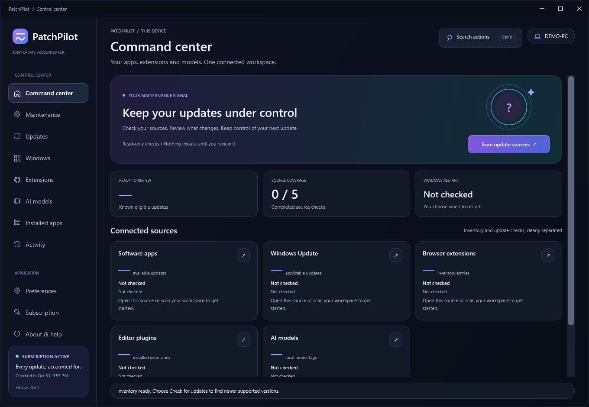

Free
$0
Understand what needs attention.
- Scan every supported source
- See available updates and installed apps
- Local history and CSV/HTML exports
- Recovery guidance, app repair and saved-version restore
One calm command center for your apps, Windows updates, extensions and local AI models. See what can change. Review it. Keep the record.
Free to download and scan. One PC per subscription. New in v0.9.2: optional desktop shortcut and minimize-to-tray settings. Unsigned early-access builds may trigger Windows SmartScreen.

Understand what needs attention.
For one PC. Cancel any time in Gumroad.
Applicable taxes shown at checkout. Uninstalling does not cancel billing.
Windows 11 or Windows 10 22H2, x64. Desktop runtime included. WinGet (Microsoft App Installer) for app updates. Per-user installation. Windows updates use a separate administrator-approved review.
Paid features continue until your membership's effective end. Your installations and records remain, and active updates can finish. Move your license using Subscription → Your PCs. Previously signed offline access lasts until its expiry, at most seven days. Cancel billing in your Gumroad library.
No drivers, general app/Windows rollback, antivirus or cloud remote management. Browser extensions stay browser-managed. VS Code supports stable/Insiders default profiles; Ollama is local only. Background maintenance needs the installed copy and a signed-in Windows session. It starts off and runs only for eligible per-user apps you approve. PatchPilot never requests an automatic restart.
This is early access. Automated core, subscription and interface checks are included, while broad clean-machine and real vendor-update testing remains in progress. Current builds are unsigned. A checksum confirms file integrity; it is not a security audit.